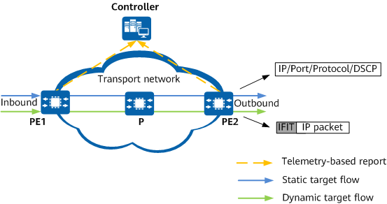

IFIT Measurement Model
The IFIT measurement model is a general model used to directly measure the packet loss rate and delay of user service flows. From the perspective of measurement, a service flow is the target object. The purpose of measurement is to obtain the data about the packet loss rate and delay generated when the service flow passes through the transport network. That is, the measurement data on the ingress and egress of the transport network is summarized to obtain the performance indicators to be measured. On the network shown in Figure 1, the IFIT measurement model consists of three objects: target flow, transport network, and measurement system.
Figure 1 IFIT measurement process
Target Flow
A target flow is the key element in IFIT measurement, and must be specified before each measurement. Target flows can be classified as static or dynamic flows depending on the generation mode.
- Static flows are generated based on the 5-tuple information (source IP address, destination IP address, protocol type, source port number, and destination port number). You can specify related field information, including the 5-tuple and differentiated services code point (DSCP), in an IP header to uniquely identify a static flow. This method can be used to implement performance measurement for specific flows.
- Dynamic flows are automatically learned and generated on the ingress node, and a learning whitelist can be configured to flexibly monitor service quality in real time. The generation of dynamic flows on transit and egress nodes is triggered by packets with the IFIT header. If a dynamic flow instance does not collect traffic statistics for a long time, it eventually ages out.
Transport Network
The transport network transmits target flows, but does not generate or terminate them. Each node on the transport network must be reachable to each other. The transport network can carry different types of services over different tunnels. For details, see IFIT Application Scenarios.
Measurement System
The measurement system consists of the ingress node (configured with IFIT) and multiple IFIT-enabled devices. IFIT supports the following two measurement indicators:
- Packet loss measurement: The number of lost packets is the difference between the number of packets entering a transport network and the number of packets leaving the transport network within a measurement interval.
- Delay measurement: The delay is the difference between the time a service flow enters the network and the time the service flow leaves the network within a measurement interval.
For details about the measurement indicators, see IFIT Measurement Indicators. The statistics are sent to the controller through telemetry for graphical display.